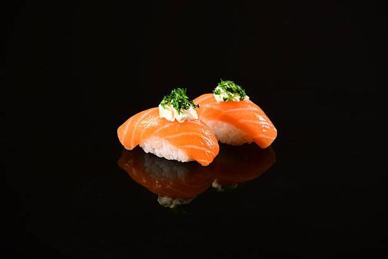
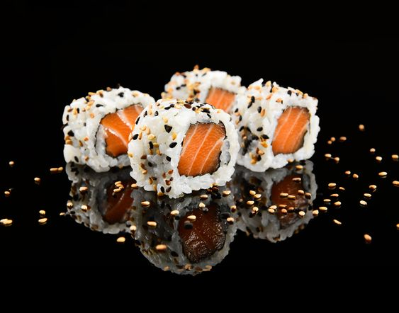

Dashi mantiene los principios de la comida japonesa ofreciendo una gran selección de sushi y especialidades fusión asiática y peruana, con menú amplio apto para veganos, vegetarianos y celiacos. Desde principios del año 2000 se ha mantenido la calidad premium que caracteriza la marca en cada una de sus creaciones.